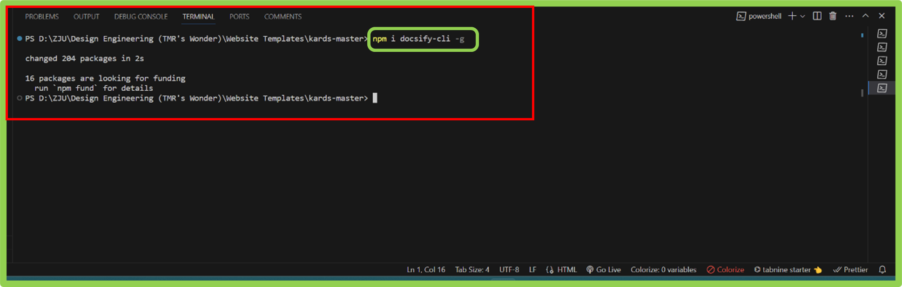
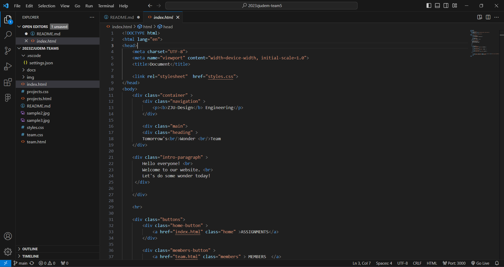

Project Management
How to Build the Website
Step 1: TOOLS NEEDED
- Installing all the tools necessary for the webpage build:
- Git; Gitlab control
- Github; Webpage server
- Github desktop; To push or pull from the github server and to the github server
- VScode; For writing our documents and code for the website and its pages
- HTML Language: to write the website
- CSS: Corresponds with html. Used to style the website
NB: Before we begin, it is worth noting that the GitHub repository had already been setup for our team website by our supervisor. It enables us to upload our website pages to a server for us to edit as team and also setup for others to open and view the work we have done during the course of the module.
Repository Setup for Nexmaker:

We would like to illustrate how to setup a repository the instructions are as follows: First sign up and create a repository on github.com. Make it public in order to grant access for others to modify. Add a README file for the purpose of writing the website description.

Got to repository settings, in the settings sidebar, select ‘Pages’. In GitHub pages under branch, select main and the ‘/root’ and save. Since the ‘/docs’ folder has not been installed yet, you select root. The setting will be changed to ‘/docs’ later after Docsify install.
Eg:

1. Request the username of the person you wish to invite as a collaborator.
2. Access the primary repository page by selecting the repository name on your GitHub dashboard.
3. Click on "Settings" under your repository name. If the "Settings" tab isn't visible, access it through the dropdown menu.
4. Within the sidebar's "Access" section, choose "Collaborators and teams."
5. Click on "Add people or Add teams" to the right of "Manage access."
6. Initiate a search by entering the name of the team or person. GitHub may auto-suggest usernames; select the correct match.
7. Under "Choose a role," pick the repository role for the team or person, then select "Add NAME to REPOSITORY."
Step 1: Navigate to the main repository page.
Step 2: Click on "Settings" under your repository name. If the "Settings" tab isn't visible, access it through the dropdown menu.
Step 3: In the sidebar's "Access" section, go to "Collaborators & teams."
Step 4: Within "Manage access," click "Remove" next to the team or person to revoke their access.
Note: Confirm the action if prompted.
Step 1: Go to the main repository page.
Step 2: Click on "Settings" under your repository name. If the "Settings" tab isn't visible, access it through the dropdown menu.
Step 3: In the sidebar's "Access" section, go to "Collaborators & teams."
Step 4: Within "Manage access," adjust the role by selecting a new role.
Step 3: LOCAL SETUP
1. Github Desktop
Install Github desktop and sync your account. Clone your repository created earlier and open in Vs Code.

2. Vs Code
Local settings Open Github desktop, clone repository created earlier and open it in Visual Studio Code.
3. Docsify Installation
Setting up Docsify in VS Code involves a series of steps to create a conducive environment. Here are two approaches to achieve this:
Approach 1:
1. How to open the terminal?
Using Menu:
• Click on "Terminal" in the top menu.
• Select "New Terminal" from the dropdown menu.
Using Keyboard Shortcut:
• Press (Ctrl/ Cmd + Shift + ` ) to open the integrated terminal.

2. In the terminal, execute the following command to install Docsify globally:
npm i docsify-cli -g
This command installs the Docsify command-line interface globally on your system.

3. Confirm that you are in the desired directory. Then, initialize the environment using the command
docsify init ./docs
This command sets up the necessary file structure for Docsify in a subdirectory called "docs."

4. Start the Docsify server by running the following command:
docsify serve docs
This command launches a local development server for your Docsify documentation.

5. Open your web browser and go to the following URL:
http://localhost:3000
This will display your Docsify documentation locally.

Now you have successfully installed Docsify in Visual Studio Code and initialized a Docsify project. You can start adding your documentation content to the "docs" directory, and changes will be reflected in real-time as you save your files.
Approach 2:
"Live Server" extension for Visual Studio Code.
1. Install "Live Server" Extension:
• Click on " Extensions view" in the left menu.
Using Keyboard Shortcut:
Press (Ctrl/ Cmd + Shift + x ) to open the "Extensions view".
• Search for "Live Server" in the search bar.
• Install the extension.

2. Starting the Server:
• Open your project in Visual Studio Code.
• Navigate to the index.html file in your project, which is designated as the entry file.
• In the bottom right corner of the window, you should see "Go Live" or a similar button provided by the "Live Server" extension.
• Click on the "Go Live" button.
• This action will launch a local development server, and your default web browser will open with the live version of your project.

Setting index.html
To set an index.html file, follow these simple steps:
1. Create a new folder on your computer where you want to store your website files.
2. Open a text editor (such as Notepad or VsCode) and create a new file.
3. Save the file with the name "index.html" in the folder you created earlier. Make sure to save it with the ".html" extension.
This is an example of how files and folders are organized in VScode.

4. Open the index.html file in your text editor.
5. Start by adding the basic structure of an HTML document by typing this code at the top of the file.
< !DOCTYPE html >
6. Below the doctype declaration, add an opening and closing "html" tag:
< html>< /html >
7. Inside the "html" tags, add opening and closing "head" tags:
< head>< /head>
8. Within the "head" tags, you can add various elements such as a title for your webpage using the "title" tag:
< title>Your Website Title< /title>
9. After closing the "head" tags, add opening and closing "body" tags:
< body>< /body>
10. Inside the "body" tags, you can start adding content to your webpage such as headings, paragraphs, images, links, etc.
For example:
11. Save your changes to the index.html file.
Now you have successfully set up an index.html file! You can open it in a web browser to see how it looks or continue adding more content and styling to build your website further.
for more information
Write document and save all under VScode
Push to Github
1. Click on the "Clone a repository" button or go to File > Clone Repository.
2. Select the repository you want to work with from the list or enter its URL.
3. Choose a local path where you want to clone the repository on your computer.
4. Click on the "Clone" button to download a copy of the repository to your local machine.
5. Once cloned, you can make changes to files within the repository folder on your computer using any text editor or IDE.
6. Open the GitHub desktop app and you will see a list of changed files under "Changes".
7. Review and select which files you want to commit by checking their checkboxes.
8. Enter a brief summary of your changes in the "Summary" field and provide an optional description in the "Description" field.
9. Click on the "Commit" button to save your changes locally.
10. To push your changes to GitHub, click on "Push origin" at the top right corner of the app window.
That's it! Your changes are now pushed to GitHub using the GitHub desktop app.
4. Designing in Figma
Figma is a UI design software. We used figma as a basis for what we intend the website design to look like. We also use Figma with the assistance of plugins for the HTML & CSS code then take the necessary measures to make it a working website
a. Designing the website in Figma
Below is a screenshot of the design workflow. Pages are placed side by side with shared elements to ensure continuity in design.

b. We toggle between ‘Design Mode’ and ‘Developer Mode’ in Figma.
Design mode allows us to add elements such as text, images, shapes, layers, colours, etc.
Examples:
 Design mode Toggle for inserting elements in the frame to design the page
Design mode Toggle for inserting elements in the frame to design the page
In Design Mode, we toggle between Elemental tools, Tabs to organize them and the Design tools sidebar to edit.

Below is an illustration of how we created the page and various tools used in Figma. By adding elements such as the frame for the page, shapes and texts are layered for the buttons. On the right sidebar, we can view and change various parameters in the design. We can align the text, buttons, shapes, use creation tools to make icons. Edit texts, colors and grids of the page. We played with these various features and reach the result of the prototype for the Landing Page and other supporting website pages .
Developer mode:
Developer Mode enables us to modify the and preview technical aspects of the UI design. We then take the code export it to Vscode for refining and adding interactive features such as links, and buttons to connected pages
Figma Developer Mode Example :
A plugin called “AutoHTML” was used to generate code according to the setup of the page layers and elements. It enables us to view HTML, CSS and JS of the page which can be extracted by copying the code into a new file, or by downloading a compressed folder containing the respective html and css files.
Vscode Import Example:  HTML and CSS files pushed to the repository and viewed in vscode. This is where we will edit elements of the pages and continuously add information over the course of the assignments.